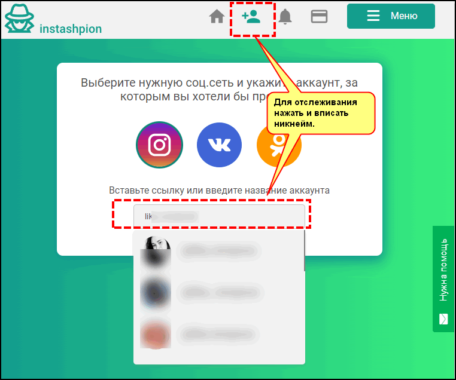
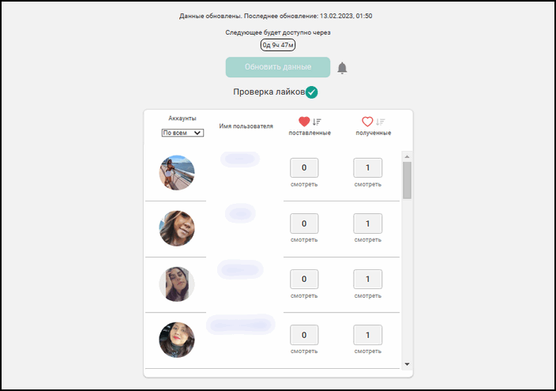
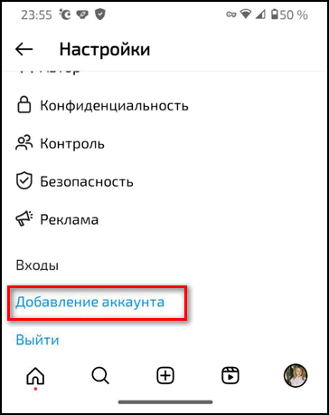
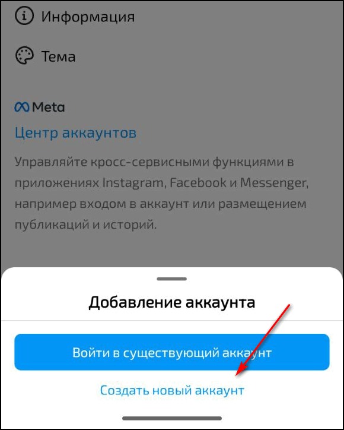
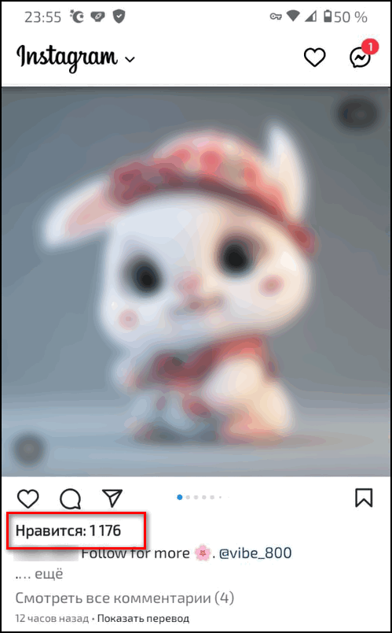
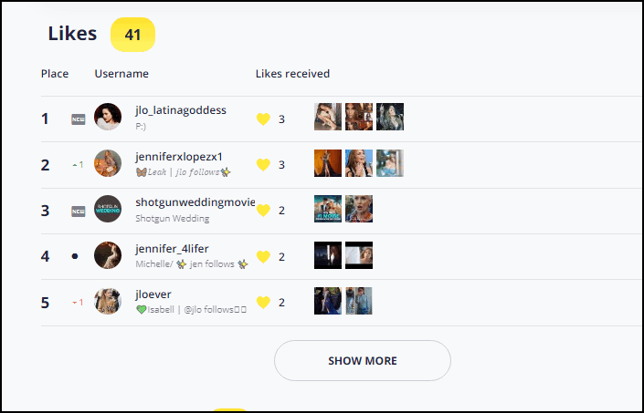
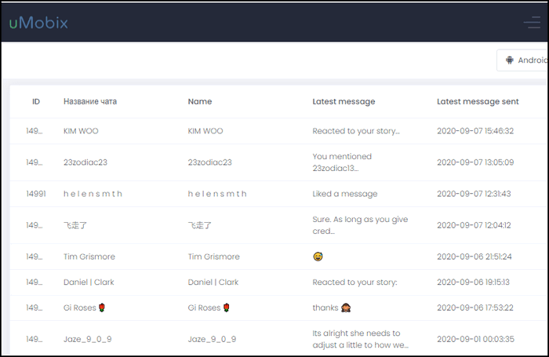

Как посмотреть что лайкают в Инстаграме друзья и знакомые

Посмотреть что лайкает в Инстаграме* другой человек стало сложнее после ряда нововведений. В первую очередь, авторы фото и видео могут скрывать лайки. Во-вторых, новая функция со скрытием своего контента из общей ленты для определенного человека.
Почему лайки в Инстаграме* приватны
В социальной сети появились новые функции, направленные на повышение приватности данных и просмотр третьими лицами. Например, посмотреть что лайкает кто-то из списка друзей стало сложнее, потому что такие посты можно увидеть только в Рекомендациях. В дополнение к этому, Инстаграм* разрешил пользователям скрывать посты от определенных пользователей, отправив их в список: «Ограниченных действий».
Помимо лайков, в социальной сети считаются приватными:
- список «Близкие друзья». Посетитель страницы не увидит, кто именно внесен в перечень привилегированных;
- Истории. Можно исключить тех пользователей, которым не будут доступны Сторис;
- закрытые аккаунты. Страницы, которые полностью скрыты от посторонних.
Чтобы узнать, кого лайкает в Инстаграме* друг или подруга, нужно воспользоваться несколькими хитростями. В большинстве, эти способы работают в обход алгоритмам Инстаграма*.
Узнать кого лайкает в Инстаграме* другой человек: все способы
Наиболее простой вариант, посмотреть кого лайкает человек в Инстаграме* – перейти к списку подписчиков и пройтись по интересующим персонам. Если у тех не скрыты лайки, то инструкция к действиям следующая:
- Зайти на страницу нужного человека – нажать сверху: «Подписки» или «Подписчики».
- Выбрать в списке другого пользователя – перейти в его профиль.
- Нажать по последней публикации – снизу надпись: «Понравилось» и упоминания никнеймов.
- Нажать по количеству лайков и посмотреть, кто в списке.
Зачастую, отлайканные публикации будут рекомендованы в соответствующем разделе Инстаграма*. То есть, нажав по кнопке: «Интересное», владелец страницы увидит все записи, на которые поставлены лайки его друзьями, подписками. Другие варианты, как посмотреть, кого лайкает:
- онлайн-сервисы. Могут быть платными и бесплатными, нередко поддерживают пробный период с ограниченными действиями, лучший на данный момент - Instashpion;
- мобильные приложения. Работают по тому же принципу, что и сервисы;
- проверить вручную. Надежный, но занимает много времени.
При работе с онлайн-сервисами нужно помнить, что те которые требуют никнейм и пароль, а также полный доступ к странице – опасно использовать.
Способ 1: Посмотреть через Инсташпиона - 100% вариант
Сервис Инсташпион удобен в комплексной слежке за чужим аккаунтом. Он показывает, кто посещал страницу, кому поставил лайк и последние Сторис, опубликованные владельцем профиля. Доступен бесплатный пробный период, благодаря которому можно посмотреть страницу в течение суток. Как следить за лайками в Инстаграме* через сервис Instashpion:
- Зайти в Инсташпион – нажать сверху: «Попробовать бесплатно».
- Ввести никнейм нужного человека – подождать, пока сервис отыщет его.

- Нажать: «Обновить базу данных» - через вкладку: «Лайки» посмотреть, кому отправлял отметки «Мне нравится».

Через этот же сервис можно посмотреть, кто ставил лайки выбранному человека. Указаны пункты: «Кому отправил» и «От кого получил».Кроме лайков, в сервисе можно посмотреть гостей страницы, подписки и подписчиков. Есть всего одна причина, почему не получится увидеть лайки – искомый профиль закрыт. Инсташпон работает только с открытыми аккаунтами, не требуя логина и пароля для входа. Преимущество сервиса в том, что альтернативы с таким же набором настроек на просторах русскоязычного и англоязычного интернета пока нет.
Способ 2: Проверить вручную
Вариант с проверкой страницы самостоятельно займет много времени, но надежный и простой. Для работы с приватными аккаунтами нужно создать фейковый профиль и подписаться на нужного человека. Сделать страницу в Инстаграме* для слежки:
- Зайти в социальную сеть – нажать по кнопке: «Настройки».
- Добавить еще один аккаунт – Создать новый.

- Зарегистрировать дополнительную страницу.

- С помощью поиска подписаться на нужного человека.

- Просмотреть список подписок – перейти к постам выбранного пользователя.
Если же такие записи не были найдены – возможно у этого человека также есть вторая страница. Инстаграм* разрешает управление пятью учетными записями на одном устройстве.
Способ 3: Похожие сервисы
Посмотреть что лайкают друзья в Инстаграме* помогут и другие сервисы, где есть информация о последней активности на выбранной странице. Например:
- Snoopreport. Сервис предлагает платный просмотр страниц, где пользователь увидит последние лайки, сможет отследить подписчиков и новые подписки;

- Instaparser. Платное приложение, где можно отслеживать и собирать любую информацию по выбранному профиля. Можно подключить до 10 аккаунтов;
- GlassaGram. Еще одна платная утилита, с помощью которой можно просматривать не только открытые, но и приватные страницы.
Несмотря на значительное преимущество последнего сервиса – минимальный тарифный план составляет 50$, на целый год – по 12$ в месяц и только Инсташпион предлагает бесплатный пробный период.
Эффективный способ, как постоянно следить за определенным человеком – воспользоваться сервисом ЮМобикс. Но для его работы нужно установить копию приложения на телефон того, за кем будет слежка - сложный и не законный вариант.

Скрыть свои лайки в постах Инстаграма*
Владелец страницы может скрыть отметки «Мне нравится», чтобы никто не смог кого лайкает в Инстаграме*. Другой человек увидит только надпись «Понравилось» и никнеймы тех, кто отметил пост. Но это не значит, что такой контент не будет рекомендован.
- Перейти в «Настройки» - Конфиденциальность.
- Закрытый профиль – подтвердить.
- Настройки – Конфиденциальность.
- Публикации – Скрыть лайки.